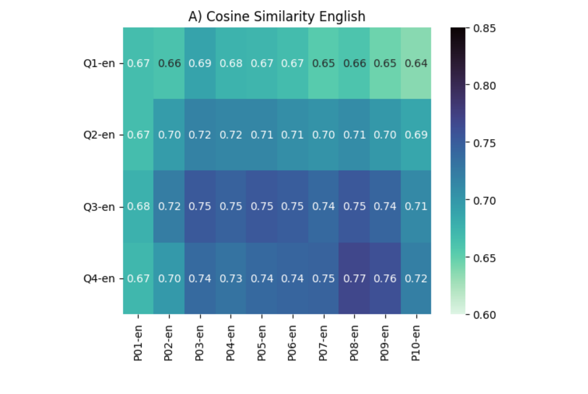

Portfolio

Experimental Data
I have conducted several studies on the semantics and pragmatics of quantification, negation and mood morphology. The code to replicate the studies and the statistical analysis can be found in the following repositories: - Quantification: OSF Repository - Neg-Raising: Github Repository - Mood morphology: Github Repository Parts of this work were done in collaboration with Leah Doroski, Maribel Romero, Evelina Leivada, Elena Pagliarini, Natalia Moskvina, Paolo Morosi and Tamara Serrano (see the section on Publications).

Diatopic & Historical Data
I have worked on the historical development of mood morphology in Old Spanish and nominal number agreement in Middle English. The data collection, analysis and results can be found at: - Mood: Github Repository - Number: Github Repository Parts of this work were done in collaboration with George Walkden, Henri Kauhanen, Molly Rolf, Gemma McCarley and Sarah Einhaus (see the section on Publications).

AI Evaluation
As part of the TURING project, I have compared the behaviour of humans and Multimodal Large Language Models in the domain of quantification, focussing on the lexical organization of quantifiers and scalar implicatures. The code is available in the following repository: - Quantification in LLMs: OSF Repository Parts of this work were done in collaboration with Evelina Leivada, Elena Pagliarini, Natalia Moskvina, Paolo Morosi and Tamara Serrano (see the section on Publications).

Agent-based simulations
I have applied Charles Yang's Variational Learning algorithm to the study of mood morphology in Spanish. In particular, I have simulated how the meaning of mood morphology would evolve diachronically if several different meanings were competing with each other. The Julia simulations can be found at: Github Repository The code heavily draws on the work by Henri Kauhanen: Kauhanen, Henri (2023). Language dynamics. Lecture Notes, University of Konstanz.